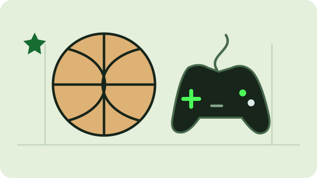

About me
A bit about me.
 A bit about me.
A bit about me.Here's where I'm from, what I'm studying, and what I do in my free time.
My story
I'm Danilo Fuentes, from North Bergen, New Jersey. I'm studying Software and Data Engineering Technology at the New Jersey Institute of Technology.
In my Free Time
In my free time, I love hanging out with friends, diving around, playing Fútbol, playing basketball, working out, and playing video games!

School
Education
 Education
EducationNew Jersey Institute of Technology
Software and Data Engineering Technology
I'm currently learning Python.